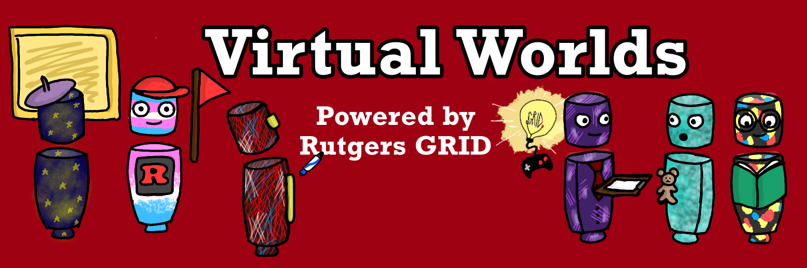

    <!-- ======= Services Section ======= -->
    <section id="services" class="services">
      <div class="container">

        <div class="section-title">
          <h2>Service</h2>
          <p>Rutgers GRID: Virtual Worlds</p>
            <h3>Giving the Rutgers Community access to virtual world technology. </h3>
            <h4><em>Easily create private, multiplayer, cross platform, browser based virtual worlds.</em></h4>
            <br />
            
        </div>


        <div class="row">
          <div class="col-md-6">
            <div class="icon-box">
              <i class="icofont-earth"></i>
              <h4><a>Fully Customized Worlds</a></h4>
              <p>Work with Rutgers GRID to help you dream, design, and create your own virtual worlds.</p>
            </div>
          </div>
          <div class="col-md-6 mt-4 mt-md-0">
            <div class="icon-box">
              <i class="icofont-wrench"></i>
              <h4><a>DIY</a></h4>
              <p>Get access to SPOKE, the online editing tool that allows you to create and publish your own virtual worlds. </p>
            </div>
          </div>
          <div class="col-md-6 mt-4 mt-md-0">
            <div class="icon-box">
              <i class="icofont-connection"></i>
              <h4><a>Private Network</a></h4>
              <p>Create, browse, and access other virtual worlds hosted on our private network.</p>
            </div>
          </div>
          <div class="col-md-6 mt-4 mt-md-0">
            <div class="icon-box">
              <i class="icofont-multimedia"></i>
              <h4><a>Multimedia</a></h4>
              <p>Bring images, videos, 360 spheres, live feeds, links, 3d objects, pdfs, audio files, and more into the virtual world.</p>
            </div>
          </div>
          <div class="col-md-6 mt-4 mt-md-0">
            <div class="icon-box">
              <i class="icofont-heart-eyes"></i>
              <h4><a>Express Yourself</a></h4>
              <p>Customize your avatar. Communicate with voice and text chat. Use tools to draw in space. Emote using 3D emojis! </p>
            </div>
          </div>
          <div class="col-md-6 mt-4 mt-md-0">
            <div class="icon-box">
              <i class="icofont-ship-wheel"></i>
              <h4><a>Pioneering the future</a></h4>
              <p>Accessing, creating, and sharing the virtual worlds experience has never been easier. Let's work together to innovate and improve education.</p>
            </div>
          </div>
        </div>
        <a href="https://virtualworlds.rutgers.edu/" class="get-started-btn ml-auto">Check out Rutgers Virtual Worlds!</a>
      </div>
    </section><!-- End Services Section -->

    